FLOW-001
Which flowchart symbol marks the beginning or end of a chart?
- Oval terminal
- Parallelogram
- Rectangle
- Diamond
This review view renders each attached SVG beside the associated stem. The final-item JSONL references the same assets through stimulusAsset. Answer keys are omitted from this preview.
Which flowchart symbol marks the beginning or end of a chart?
A flowchart step reads a value from the user. Which symbol should contain that step?
A step assigns Sum = Sum + N. Which symbol matches the operation?
What does every line connecting flowchart steps need to show?
What is the usual direction in which a flowchart proceeds?
[Diagram] In this average-of-three flowchart, which value is printed?
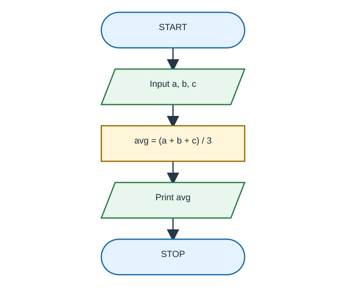
[Diagram] If a=6, b=9, and c=12, what does the flowchart print?
[Diagram] In the average chart, what happens immediately after the three inputs are read?
A diamond asks whether salary is at least EGP 6,000. How many exits should leave the decision?
[Diagram] An employee earns EGP 5,500. Which path and bonus does the chart select?
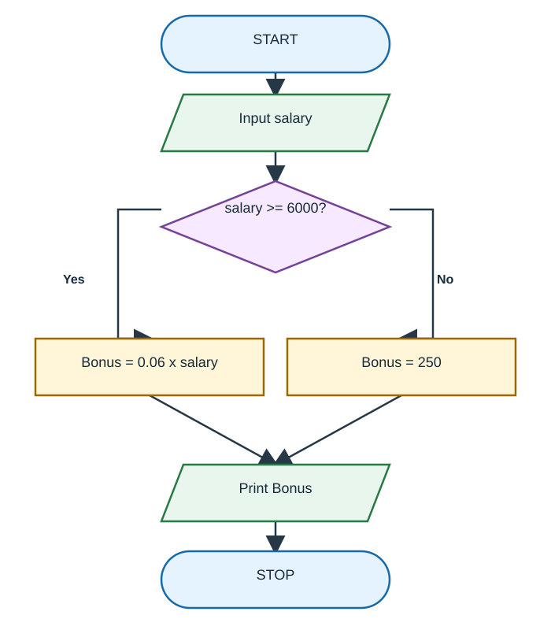
[Diagram] What bonus does this chart assign to a salary of exactly EGP 6,000?
[Diagram] For a salary of EGP 6,000, what path and bonus does this chart produce?
Why do both branches of the bonus decision rejoin before Print Bonus?
[Diagram] Which statement correctly describes the B connectors shown?
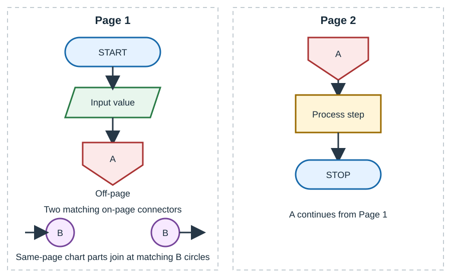
[Diagram] When is the off-page connector shown used?
[Diagram] What is the first value of N tested in the sum-from-1-to-100 chart?
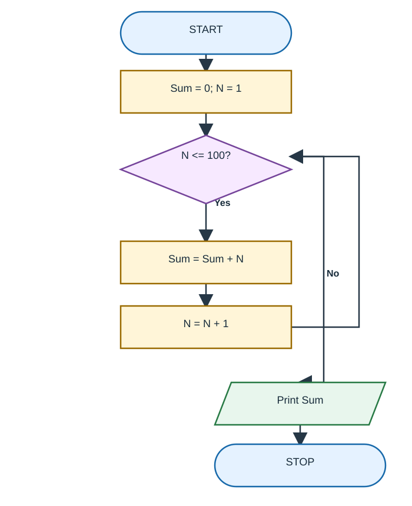
[Diagram] After the first pass through the sum loop, what are Sum and N?
[Diagram] What value is printed by the completed sum chart?
[Diagram] When does the sum chart leave the loop and print Sum?
[Diagram] In which chart is the condition checked before any loop-body action?
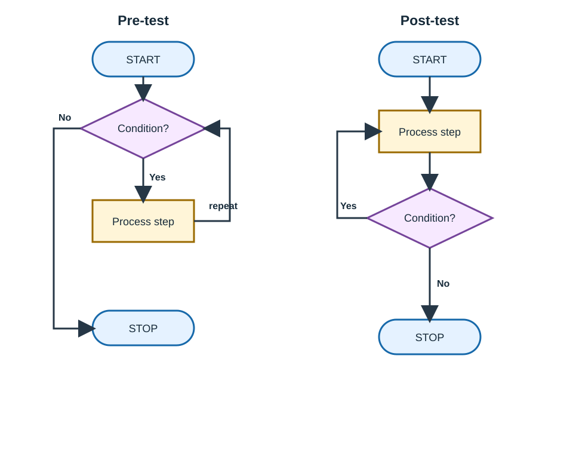
[Diagram] Which loop chart guarantees that its process step happens at least once?
[Diagram] The sum chart returns from adding Sum to the condition, but it has no N = N + 1 step. What happens?
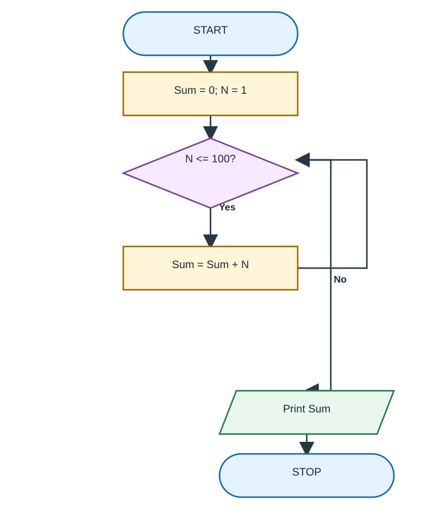
[Diagram] For N=4 in the factorial chart, what is PROD after the first complete loop pass?
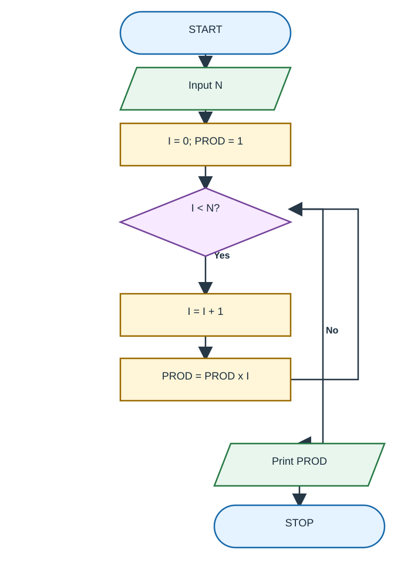
[Diagram] For N=4, which sequence of I values is multiplied into PROD?
[Diagram] What does the factorial chart print when N=5?
[Diagram] At which tested value of I does the factorial chart stop when N=5?
[Diagram] The six-score chart reads six values and adds each to Sum. If the scores are 26, 49, 98, 87, 62, and 75, what is Output Sum?
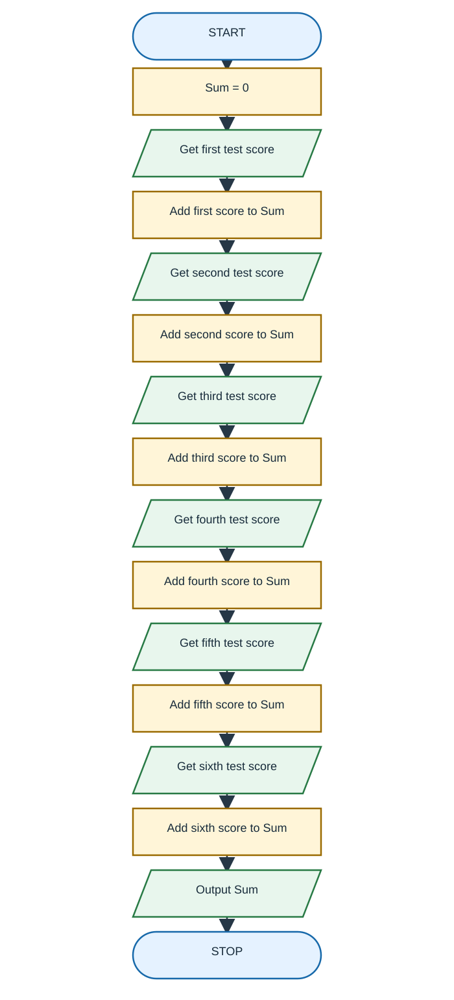
[Diagram] The chart receives a=8, b=12, and c=10. What value does it print as Big?
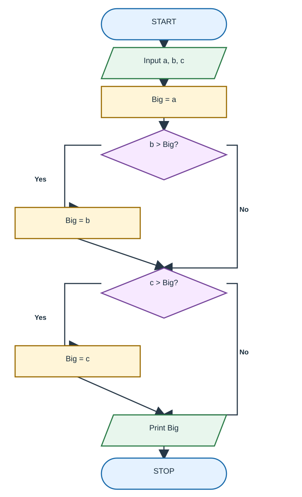
[Diagram] The chart reaches Print result and then has no ending symbol. Which flowchart convention is violated?
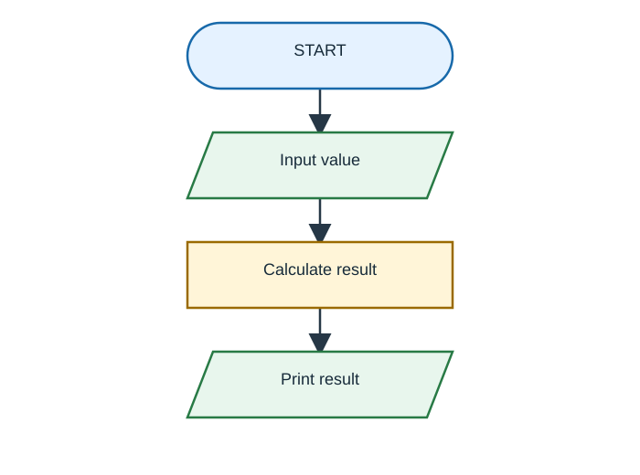
Which option best distinguishes a flowchart from pseudocode?
Which statement about pseudocode is correct?
Which item is an exact language-specific program rather than pseudocode?
[Diagram] Which condition in the grade decision chart makes an average of exactly 60 pass?
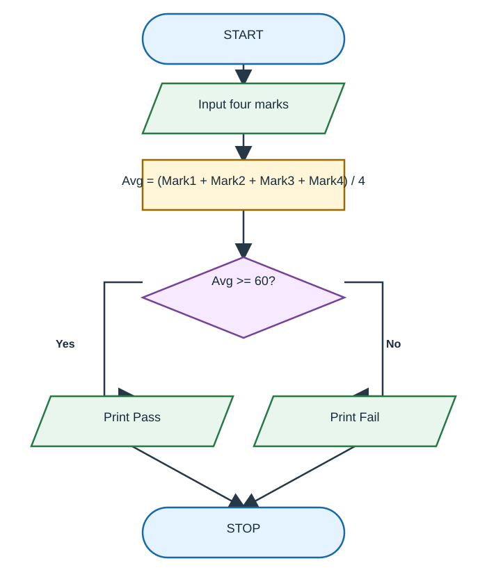
[Diagram] A student's four marks average 59.75. Which output path is followed?
[Diagram] A student's marks are 55, 70, 62, and 48. What does the grade chart print?
Why can a flowchart make a missing branch or disconnected step easier to notice before coding?
A complex flowchart is split across two pages. Which symbol marks where its path continues on the next page?
In a decision chart, the condition is written as a question. What are suitable labels for its two outgoing paths?
[Diagram] Which part of the bonus chart should change if the policy becomes ‘EGP 6,000 or more receives 7%’?
A reader wants to explain a business rule to a manager who does not write Python. Which benefit of a flowchart is most relevant?
Use the attached average-of-three flowchart. Trace it for a=6, b=9, c=12. Then describe one change to the chart that would make it calculate the sum instead of the average.
Use the attached bonus flowchart. For salaries of EGP 5,500 and EGP 6,000, show the branch and bonus for each. Explain why replacing >= with > changes the EGP 6,000 case.
Use the attached sum-from-1-to-100 flowchart. Complete a short trace for its first three loop passes, recording (N before test, Sum after addition, N after increment). State the final output.
Use the attached factorial flowchart for N=4. Trace I and PROD through every pass, show the first failing condition, and give the printed result.
Design a flowchart for a decision with two outcomes that rejoin before the single STOP terminal. Use this rule: input a mark average; print Pass when it is at least 60, otherwise print Fail. Submit either a drawn chart or a node-and-arrow list naming the symbol for every step and both branch labels.
A student draws a loop that checks N <= 100 before adding N, starts with N=1 and Sum=0, adds N, increments N, and returns to the test. Explain whether this is pre-test or post-test, whether the body could run zero times if the initial N were changed to 101, and why.
Assume the second input is nonzero. Write pseudocode to read two numbers and display their sum, difference, product, and quotient. Then explain one way pseudocode differs from a language-specific program.
Use the attached six-score flowchart and the scores 26, 49, 98, 87, 62, 75. Show the running Sum after each score, give the final output, and identify whether the chart contains a decision or a loop.